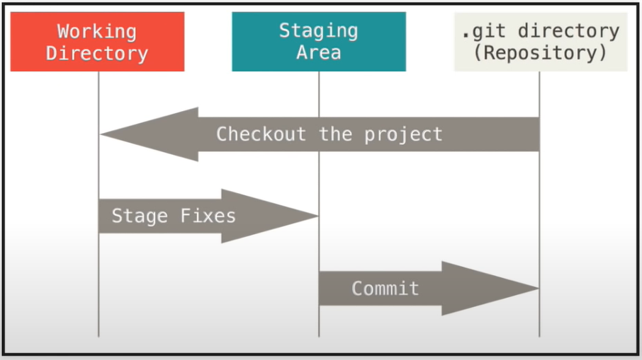

A guide for git#
Sources: https://youtu.be/HVsySz-h9r4
Help#
git help VERB
git VERB -- helpgit help config
git config --help
Setup#
check version
git --versionsetup name and email
git config --global user.name "NAME" git config --global user.email "EMAIL"check config
git config --global --list
initialize git repository from existing local project
git initinitialize git repository from remote project
git clone URL TARGET_DIRECTORYremove
.gitfolder ⇒ remove git from the projectto exclude files from version control, use the
.gitignorefile.idea (FOLDER) __init__.py (file) *.py (file with wildcard)
Commit#

Check status of all changed files
git statusCheck changes in more detail
git diffAdd file to the staging area
git add FILENAMEAdd all changed files to the staging area
git add -ACommit (for good documentation, add a very detailed message)
git commit -m "MESSAGE"
Remote repository#
Get repository information
git remote -vList branches (locally/remotely)
git branch -aGet code from remote repository
git pull origin BRANCHUpload code to remote repository (1st pull because the code could be changed, use -u to associate the local branch with the remote branch)
git pull origin BRANCH git push -u origin BRANCH
Branching#
Create new branch
git branch BRANCH_NAMEGo to branch
git checkout BRANCH_NAMECreate new branch and go to it
git checkout -b BRANCH_NAMEList local branches (starred branch is the current branch)
git branchList merged local branches
git branch --mergedMerge branch into current branch
git merge --no-ff BRANCH_NAMEDelete branch locally
git branch -d BRANCH_NAMEDelete branch remotely
git push origin --delete BRANCH_NAME
Fixing mistakes#
Return to state of the last commit
git checkout CURRENT_BRANCH_NAMEFix bad commit message
git commit --amend -m "GOOD MESSAGE"Add extra file to former commit
add file to the staging area
git commit --amend